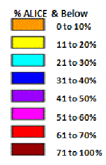
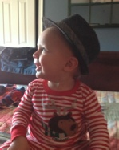
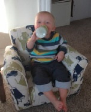
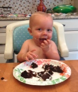
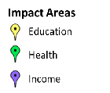

United Way of Northern New Jersey Community Impact
At United Way of Northern New Jersey, we believe that everyone wins when children succeed in school and reach their potential, families are financially stable and independent, and individuals achieve and maintain good health throughout the stages of their lives. That is why we are working hard to address the barriers which hinder residents in our communities from attaining a quality EDUCATION, sufficient INCOME, and optimal HEALTH.
While these seem like simple demands, it is alarming to learn how many individuals
and families struggle in our communities to attain these very basic needs. According
to a study commissioned by United Way of Northern New Jersey, nearly one-
Click here to learn more about poverty and a hidden population in our communities living one paycheck away from crisis by reading United Way of Northern New Jersey’s ALICE Report.
Our work in EDUCATION
Childcare centers are closing, working families are struggling to find affordable, quality care, and schools are looking for meaningful ways to enhance student learning. What is the damage to our entire education system when some students are turned off to learning by first grade? How can we better engage students throughout their teenage years so they feel hopeful for their future?
United Way is working to help close the education inequality gap, with a laser focus on the successful development of our children – from preschool through high school. With a solid educational foundation and strong community support, our children will be able to achieve their potential, secure stable jobs, and lead productive lives.
Success By 6
Youth Empowerment Alliance
Our work in INCOME
As the economy continues to falter, jobs that earn a livable wage grow more and more scarce. Too many residents living in our communities do not earn enough to adequately meet their basic needs. What gets paid: groceries or essential medications? The electric bill or rent? How can we equip individuals to weather life’s challenges and rise above their circumstances?
United Way is working to create an environment where individuals are self-
Center for Financial Growth
Pathways to Prosperity
Family Success Center
Family-
Housing For All
Income Tax Assistance
Our work in HEALTH
Quality, affordable health care is simply unattainable for many people living and
working in northern New Jersey. For others, tending to the needs of an ailing spouse,
parent, sibling, friend, or child dominates their lives. If unpaid family caregivers
did not provide the bulk of the essential, day-
United Way of Northern New Jersey is working to improve conditions in our community
so that each person has access to healthy food options, receives necessary support
when caring for a loved one, and can live the best life possible.
Caregivers Coalition
Healthy
Foods



